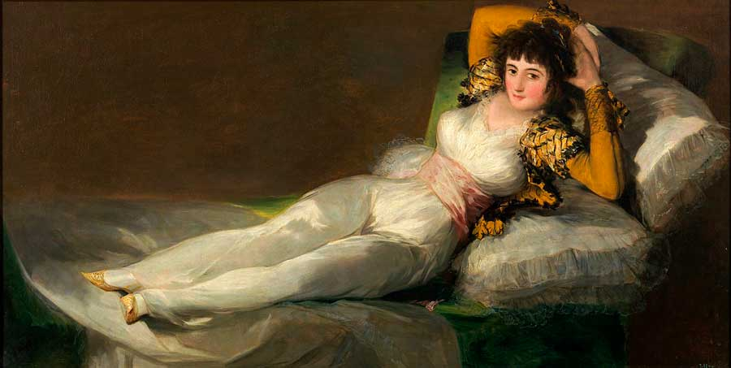
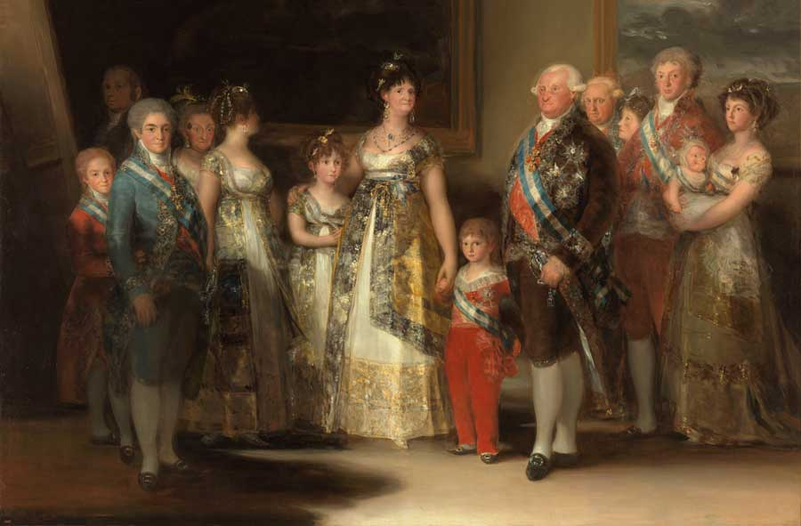
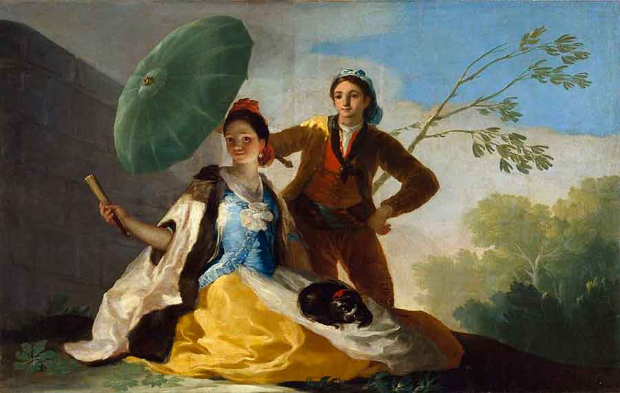

Año de creación: 1819-1823
Pertenece a su era oscura, la obra formaba parte de la decoración de los muros de su casa, llamada La Quinta del Sordo. Esta obra ocupaba probablemente (por el formato que tiene) el espacio de la sobrepuerta de la planta baja de la casa.

Año de creación: 1800-1808
La maja vestida es una de las obras más conocidas del pintor español, está realizada en óleo sobre lienzo y Se encuentra en el Museo del Prado, Madrid, España, desde 1901. esta pintura recibía el nombre de «gitana».

Año de creación: 1800
Es un retrato colectivo del Rey Carlos IV de España. Perteneció a las colecciones privadas del Palacio Real de Madrid, donde aparece en el inventario de 1814. Pasó a formar parte del recién fundado Museo del Prado en 1824, por orden del rey Fernando VII, quien aparece retratado en el cuadro.

Año de creación: 1777
La obra es parte de la serie de cartones para la Real Fábrica de Tapices de Santa Bárbara; en concreto, para la serie destinada a la decoración del comedor del infante Carlos, entonces Príncipe de Asturias, en el Palacio Real de El Pardo.
Año de creación: 1798
El aquelarre es uno de los seis pequeños cuadros que pintó Francisco de Goya entre 1797 y 1798 para el palacio de recreo de los duques de Osuna, en la finca que ellos tenían en la Alameda de Osuna (hoy parque del Capricho), entonces a las afueras de Madrid, cerca del pueblo de Barajas. Más tarde, después de 1928, José Lázaro Galdiano lo compró para su colección particular y actualmente forma parte de los fondos pictóricos de la Fundación Lázaro Galdiano.